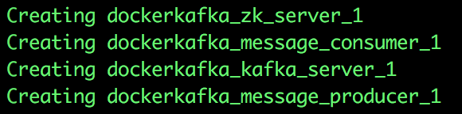
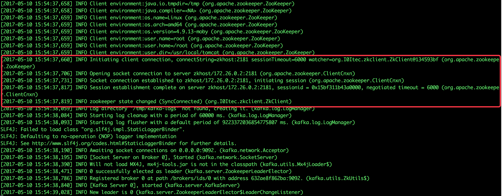
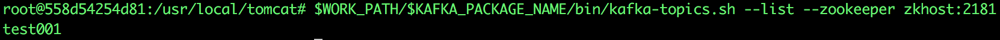
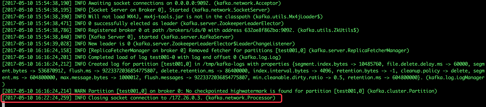
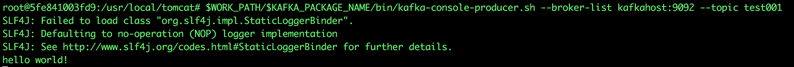
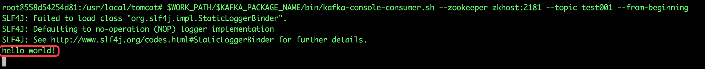
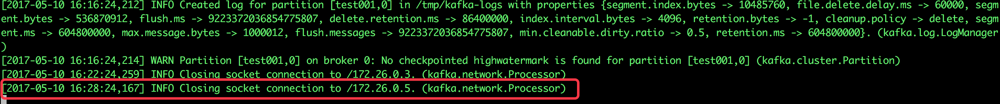

Kafka是一种高吞吐量的分布式发布订阅消息系统，从本章开始我们先极速体验，再实战docker下搭建kafka环境，最后开发一个java web应用来体验kafka服务。
我们一起用最快的速度体验kafka的消息发布订阅功能：
新建一个docker-compose.yml文件，内容如下：
version: '2'
services:
zk_server:
image: daocloud.io/library/zookeeper:3.3.6
restart: always
kafka_server:
image: bolingcavalry/kafka:0.0.1
links:
- zk_server:zkhost
command: /bin/sh -c '/usr/local/work/start_server.sh'
restart: always
message_producer:
image: bolingcavalry/kafka:0.0.1
links:
- zk_server:zkhost
- kafka_server:kafkahost
restart: always
message_consumer:
image: bolingcavalry/kafka:0.0.1
links:
- zk_server:zkhost
restart: always打开终端，在docker-compose.yml所在目录下执行docker-compose up -d，由于需要从hub.docker.com下载镜像，所以需要等待几分钟，下载结束后会自动启动四个容器，如下图：

为了更好的观察效果，我们要打开三个终端对不同的容器做操作，在后面我们用编号来表达不同的终端，编号对应如下：
1号 : kafka server
2号 : 消息生产者(producer)
3号 : 消息消费者(consumer)
1号终端中输入以下命令，即可看到kafka server的实时输出信息：
docker logs -f dockerkafka_kafka_server_1输入命令后看到的信息如下图，与zookeeper连接成功，启动成功:

2号终端中输入以下命令，进入消息生产者容器：
docker exec -it dockerkafka_message_producer_1 /bin/bash再执行以下命令创建一个主题：
$WORK_PATH/$KAFKA_PACKAGE_NAME/bin/kafka-topics.sh --create --zookeeper zkhost:2181 --replication-factor 1 --partitions 1 --topic test0013号终端中输入以下命令，进入消息消费者容器：
docker exec -it dockerkafka_message_consumer_1 /bin/bash执行以下命令可以查看当前kafka sever上的所有主题：
$WORK_PATH/$KAFKA_PACKAGE_NAME/bin/kafka-topics.sh --list --zookeeper zkhost:2181可以看到刚才在2号终端创建的主题，如下图：

继续在3号终端上执行以下命令，即可订阅主题为test001的消息：
$WORK_PATH/$KAFKA_PACKAGE_NAME/bin/kafka-console-consumer.sh --zookeeper zkhost:2181 --topic test001 --from-beginning此时回到1号终端，可以看到消息订阅者容器的连接信息，如下图：

现在主题也创建了，订阅也添加了，可以测试消息的发送和接收了：
在2号终端，执行以下命令，就可以进入发送消息的交互模式：
$WORK_PATH/$KAFKA_PACKAGE_NAME/bin/kafka-console-producer.sh --broker-list kafkahost:9092 --topic test001此时已经进入了交互模式，继续输入一个字符串，例如hello world!，再输入回车键，即可发送内容为"hello world!"的消息，如下图：

现在回到3号终端，可以看到已经接收到了最新的消息，内容被打印出来了，如下图：

最后我们回到1号终端，能看到消息生产者的连接信息，如下图：

至此，我们快速体验了kafka的消息发布订阅功能，下一章我们再细说docker下kafka环境的搭建过程。